เจ้ากบ: ปรับ runtime ตาม ADR-P0-019
Before คือ commit a634409 ที่ถูกปฏิเสธจาก playtest ส่วน After เป็นภาพ Chromium จาก source รอบใหม่ เปรียบเทียบพื้นที่อ่าน ตัวเลือก และเส้นทางที่เคยใช้งานไม่ได้ ภาพเป็นผลเรนเดอร์จริง ไม่มีการแต่งภาพ
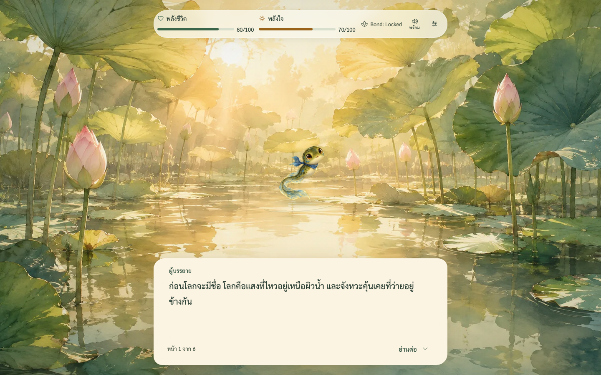

กระดาษตรึงกับขอบล่าง viewport ส่วนตัวเลือกอยู่ในพื้นที่ของตัวเอง
การยืนยันเริ่มใหม่แยกชั้นจากหน้าแรก

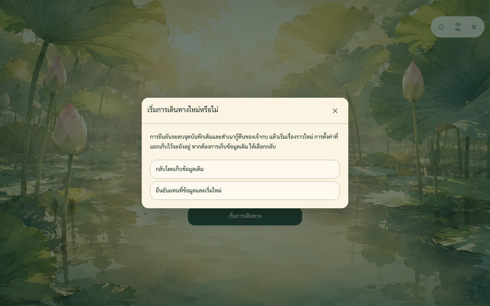

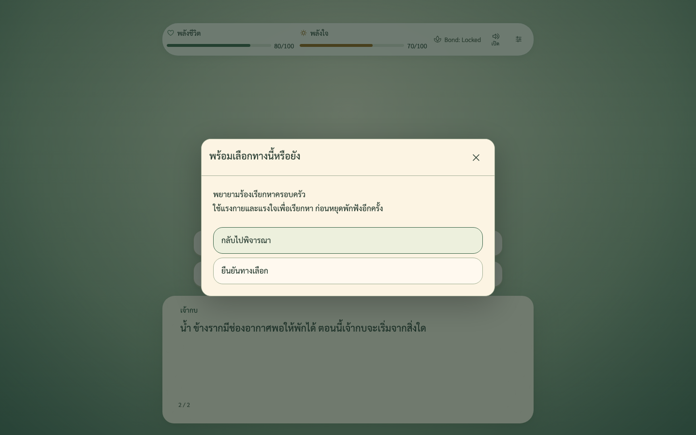
บทอ่านและค่าพลังมีพื้นที่แยกกัน

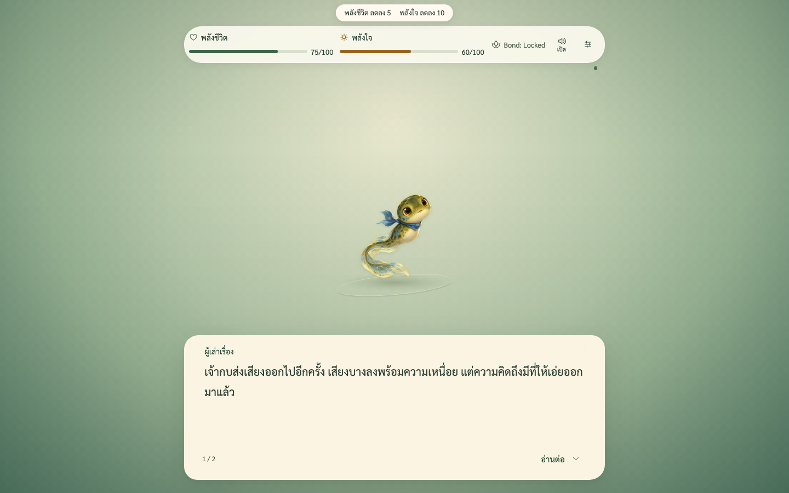

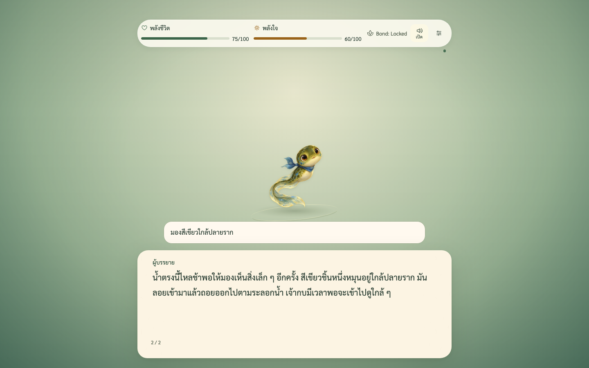
ฉากพายุ คำแนะนำ และข้อความ 200%

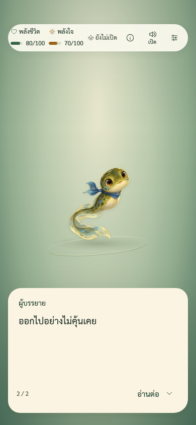

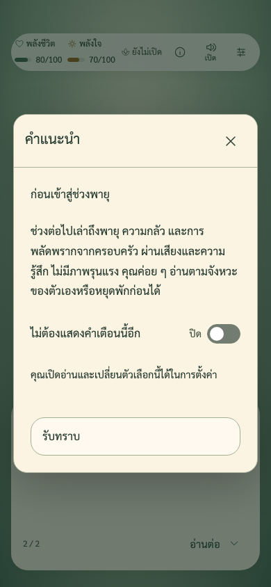

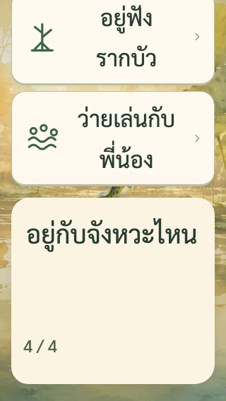
ตั้งค่าและสวิตช์ที่เข้าถึงได้

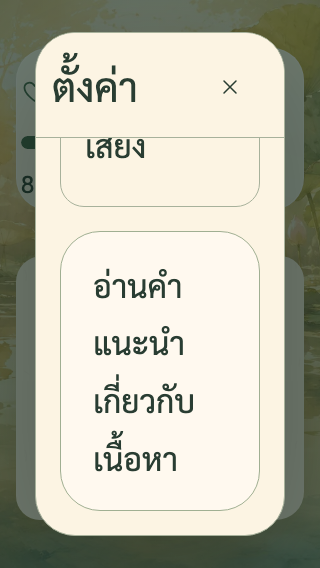

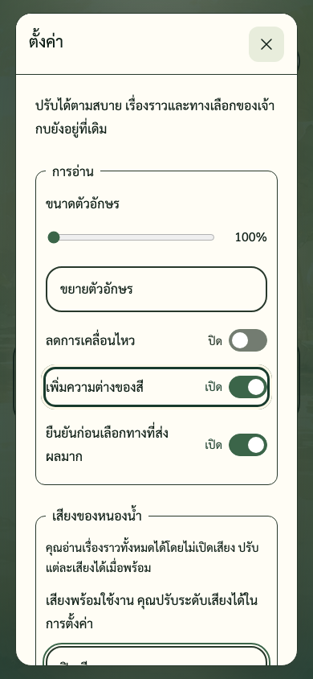

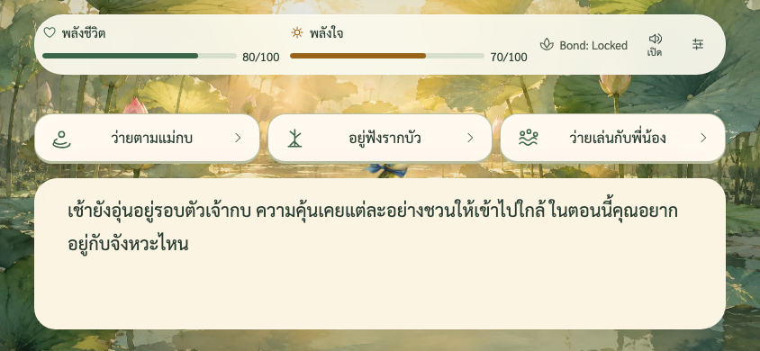
หลักฐานที่ตรวจซ้ำได้
720 unit cases ผ่านทั้งหมด ไม่มี skip · 12 เส้นทางเดิม · หกขนาดจอ · ภาพ 36 ภาพจาก visual runner และ 14 ภาพจาก production runtime เพิ่มเติม ตัวเลข geometry และ CLS ใช้ประกอบการตรวจภาพ ไม่ใช่คำรับรองความงามหรือการตรวจรับของ PO
ผล runtime พอร์ต 8001 · geometry, contrast และ source hashes · วิธีทดสอบและข้อจำกัด · Before a634409 และ hashes · ประวัติ 093595d · เปิดเกม
ยังรอ PO playtest ตรวจภาพและภาษาไทย อุปกรณ์จริง Safari/iOS/Firefox และ VoiceOver/NVDA ยังไม่ได้ตรวจ รอบนี้ไม่มี merge หรือ deploy